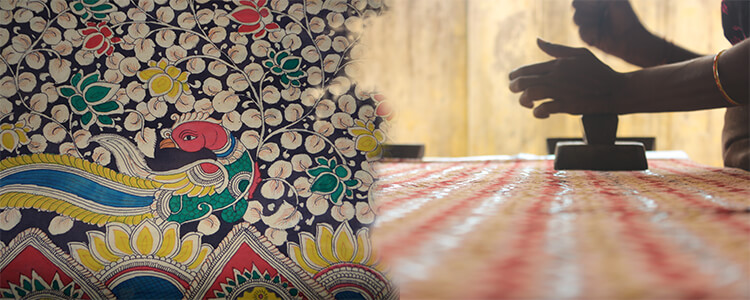
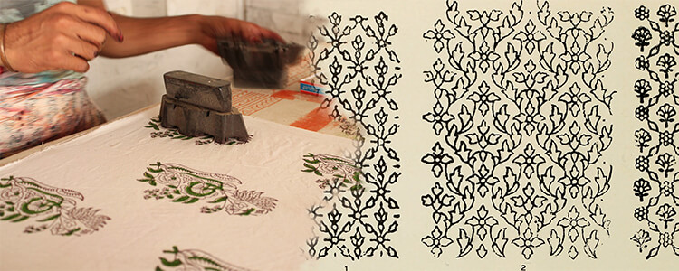

KALAMKARI OVER THE YEARS...
Kalamkari art has been practiced by many families in Andhra Pradesh, some villages in Tamil Nadu by migrants from Telugu speaking families and over the generations have constituted their livelihood.
As an art form, it found its peak in the wealthy middle ages. The Mughals who patronized this craft in the Coromandel called the practitioners of this craft "qualamkars", from which the term "kalamkari" evolved. In this era, term refers to the making of any cotton fabric patterned through.
Vegetable dyes by free hand painting and block printing.In places where the fabric is block printed the kalam (pen) is used to draw finer details and for application of some colors.
In modern times, this has become completely digital. New types and new techniques are introduced and the digital files of kalamkari (pen work) are totally introduced widely all over the regions of India.
Today we come across Kalamkari in its pure form as bedsheets, curtains, bags, sarees, dress materials. An art which adorned the temples in olden times has come to our own homes in different forms and shapes. Artforms like Kalamkari have started gaining more and more popularity in recent times because of their no-chemical process of creating printed textiles. The start to finish process of this art involves use of vegetable dyes, fruit powder and minerals like iron to produce colors and paint, on an organic cotton cloth. Increasingly, people in the world are moving towards lesser use of chemicals in their lives and thus, anything organic and vegan is a preferred commodity for consumption in today’s world.
Most popular of Kalamkari’s use today is in making sarees. Saree is the most beloved attire for an Indian woman. Despite many of us adopting western ways of dressing nowadays, a handcrafted saree is still a treasured and cherished outfit for most Indian women.

Home Décor has been another major user of this artform. Imagine a minimalistic living room, a white couch with a Kalamkari cushion to add color and ethnic highlight to it!

If not that, why not just carry a piece of this art on you as an accessory. The muted colors of this art work best for professional environments. Yet it adds a fusion touch to your outfit.
Why wait for that perfect art piece to show up in an art exhibition and crave to own it rather just pick up your smartphone and get started on making it yourself.